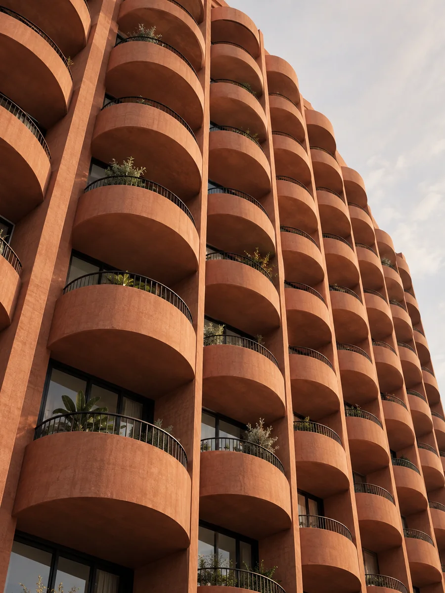
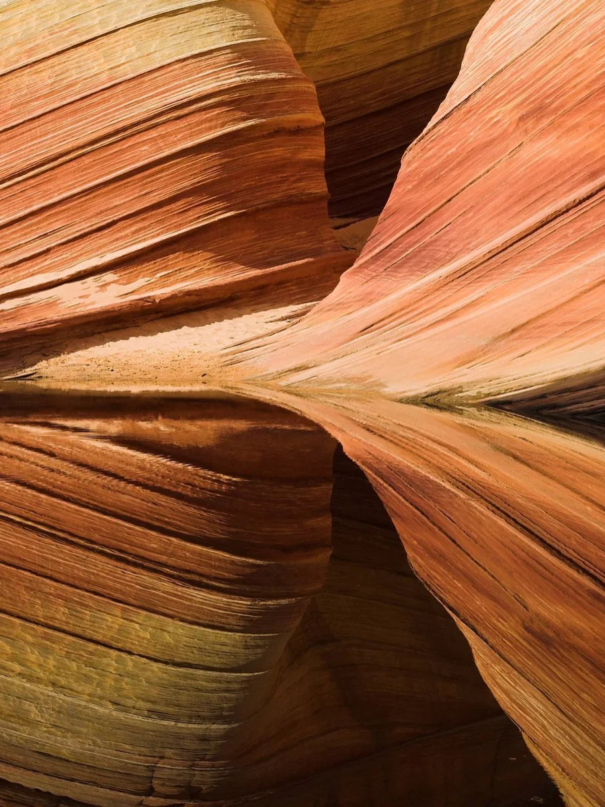
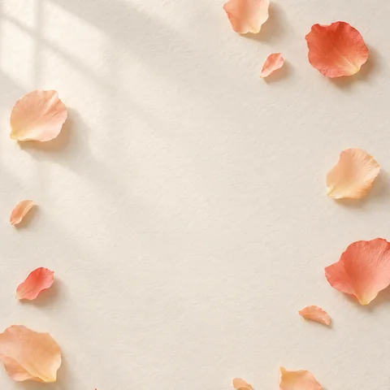

Lucía Vera
Directora de arte · Quito
248proyectos
12,4 milseguidores
310siguiendo
Identidades para marcas que quieren durar. Fotografía, tipografía y mucho papel.




Directora de arte · Quito
Identidades para marcas que quieren durar. Fotografía, tipografía y mucho papel.


